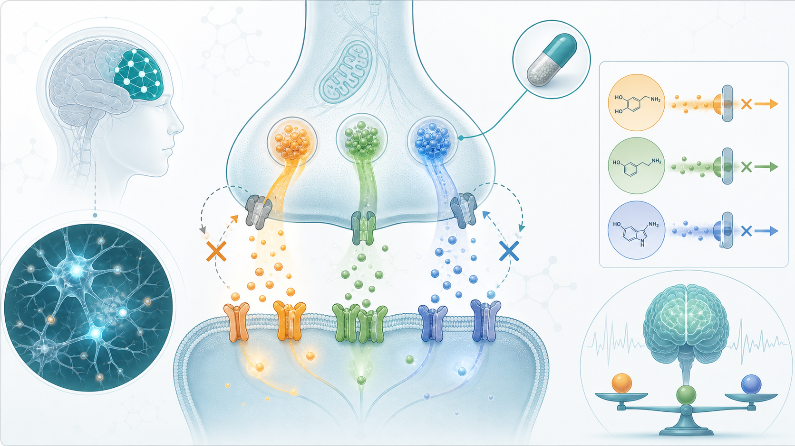

注意力不足過動症（ADHD）三期臨床成功。
分享這篇分析
把這篇文章轉給關注生技醫藥、公司研究或資本市場的朋友。
最近，一部以韓國「鐵拳教育」為題的影劇引發討論。
劇中用雷霆手段整頓校園亂象，看得觀眾一時痛快。可一旦把戲劇裡的爽感搬進現實，後果往往不是正義，而是誤傷。現實裡，很多被貼上「不聽話」、「叛逆」、「故意搗蛋」標籤的孩子，並不是品行壞，也不是欠管教，而是可能正被一種神經發展疾病困住。
這個疾病叫 ADHD，也就是注意力不足／過動症。
ADHD 不是孩子懶惰，不是家長沒教好，更不是靠打罵就能「矯正」的行為問題。它牽涉大腦前額葉、注意力控制、衝動抑制、工作記憶、情緒調節與獎賞系統。當大腦的神經傳導訊號不夠穩，孩子就可能表現出分心、坐不住、衝動、拖延、情緒爆衝、無法完成任務。
可惜的是，社會常常先看見行為，卻看不見病因。於是，有些孩子被罵成問題學生，被送進高壓管教環境，被迫承受本不該落在他們身上的「鐵拳」。
真正該被打碎的，不是孩子，而是對 ADHD 的無知與偏見。也就在這樣的背景下，ADHD 藥物研發傳來一個重要進展。
Otsuka 旗下在研新藥 centanafadine 公布成人 ADHD 合併焦慮症 IIIb 期臨床試驗積極結果。若順利獲 FDA 批准，centanafadine 將成為 ADHD 治療領域中首個獲批的 norepinephrine、dopamine、serotonin reuptake inhibitor，也就是同時抑制正腎上腺素、多巴胺與血清素再吸收的三聯單胺再吸收抑制劑。
FDA 已接受 centanafadine 的新藥申請並給予優先審查，目標審查日期為 2026 年 7 月 24 日。
01｜ADHD 不只是「過動」，更常被焦慮、憂鬱與情緒困擾放大
很多人對 ADHD 的想像，還停留在小男孩坐不住、上課講話、衝動插嘴。
但真實世界中的 ADHD 複雜得多。有些患者不一定過動，反而是注意力渙散、時間管理困難、拖延嚴重、忘東忘西、工作效率低落。有些成人患者直到進入職場後，才發現自己長期處在混亂、焦慮與自責裡。
更麻煩的是，ADHD 常常和焦慮症共病。
當注意力難以集中，事情做不完，情緒又長期被失敗經驗磨損，焦慮就會變成另一層枷鎖。焦慮讓人更難專注，ADHD 又讓焦慮更難解除，兩者互相放大，形成惡性循環。
這也是 centanafadine 這次 IIIb 期資料受到關注的原因。這項研究不是挑選最單純的 ADHD 患者，而是納入 315 名成人 ADHD 合併廣泛性焦慮症或社交焦慮症患者。這類患者本來就是臨床上較難處理的人群，因為部分 ADHD 藥物可能讓焦慮更明顯，醫師在用藥上也會更謹慎。
Otsuka 公告指出，這項隨機、雙盲、安慰劑對照 IIIb 期研究主要終點，是第 8 週成人 ADHD 研究者症狀評定量表 AISRS 總分變化。關鍵次要終點則包含第 8 週 Hamilton Anxiety Rating Scale，也就是漢密爾頓焦慮量表變化。
結果顯示：
Centanafadine 組 AISRS 總分較基線下降 18.5 分。
安慰劑組下降 12.6 分。
組間差異約 5.87 分，達統計顯著。
焦慮量表方面：
Centanafadine 組 HAM-A 下降 12.5 分。
安慰劑組下降 10.6 分。
同樣達統計顯著。
值得注意的是，治療第 1 週就觀察到與安慰劑分離，並維持至整個 8 週研究期間。對 ADHD 治療來說，早期起效很重要。因為患者與家屬最怕的是「吃了不知道有沒有用」，一旦看不到變化，就容易停藥或失去信心。
第 1 週就出現訊號，代表 centanafadine 若順利上市，可能在真實世界中有助於提升治療依從性。
02｜Centanafadine 的關鍵，不只是有效，而是三條神經傳導路徑一起調節

Centanafadine 的機制，是它最大的特色。
現有 ADHD 藥物大致可分成兩大類。
第一類是中樞神經興奮劑，例如 methylphenidate（哌甲酯），代表藥包括 Ritalin、Concerta 等。這類藥物效果明確、起效快，是許多治療指引中的重要選擇，但也涉及食慾下降、失眠、心悸，以及管制藥品管理等問題。
第二類是非興奮劑，例如 atomoxetine（阿托莫西汀），代表藥是 Strattera；以及 Qelbree（viloxazine ER，維洛沙秦緩釋劑）。這類藥物沒有傳統興奮劑的濫用顧慮，但起效速度、療效強度與患者適配性各有差異。
Centanafadine 則試圖走出第三條路。
它同時作用於三個神經傳導系統：
Norepinephrine，也就是正腎上腺素，和警覺性、注意力、工作記憶有關。
Dopamine，也就是多巴胺，和動機、獎賞、衝動控制、執行功能有關。
Serotonin，也就是血清素，和情緒調節、焦慮、衝動與穩定度有關。
大腦神經元之間傳遞訊號，就像一封封信被送到突觸間隙。神經傳導物質釋放後，若沒有被下一個神經元接收，就會被前一個神經元透過轉運體回收。Centanafadine 的作用，就是讓正腎上腺素、多巴胺、血清素被回收得慢一點，讓這些訊號在突觸間隙停留更久，讓前額葉與相關神經迴路得到更穩定的刺激。
這種三聯機制的意義，在於它不只瞄準注意力與過動，也可能同時照顧 ADHD 常見的情緒調節困難與焦慮共病。
當然，這並不代表 centanafadine 可以取代所有 ADHD 藥物。
ADHD 是高度異質性的疾病，有人對 methylphenidate 反應很好，有人更適合 atomoxetine，有人需要行為治療、親職介入、學校支持與藥物共同配合。Centanafadine 的價值，是增加一個新機制選項。尤其對共病焦慮、不能耐受興奮劑，或需要更廣泛症狀控制的患者，可能帶來新的臨床想像。
03｜緩釋技術很重要：ADHD 不是只有白天上課才存在

ADHD 症狀不是只在上課或上班時出現。早上起床拖延、出門混亂、白天分心、下午疲乏、晚上情緒爆衝、睡前難以收心，這些都是患者與家庭每天都會面對的真實情境。
所以 ADHD 藥物不能只看「有效」，還要看藥效能不能穩定覆蓋一天。
傳統速效製劑容易出現血中濃度高峰與低谷。高峰時副作用集中，低谷時症狀反彈。部分長效製劑雖然改善了這個問題，但若傍晚濃度下降過快，仍可能出現晚間情緒波動、易怒、疲憊與睡眠困難。
Otsuka 開發的 centanafadine 是每日一次延釋膠囊，目的就是讓血中濃度曲線更平穩。這對 ADHD 長期治療非常重要，因為治療目標不是讓患者某幾個小時比較專心，而是讓他在日常生活中更穩定地完成任務、控制衝動、減少衝突，並降低焦慮與挫敗循環。
安全性方面，這次 IIIb 期研究中，較常見不良反應包括噁心、食慾下降、腹瀉、失眠、口乾與嘔吐。整體與 centanafadine 已知安全性特徵及 ADHD 合併焦慮人群預期一致，未出現新的安全性訊號。
04｜ADHD 治療不是「讓孩子變乖」，而是讓大腦有機會被好好使用
談 ADHD 藥物，很容易被誤解。
有人擔心吃藥會讓孩子變呆。
有人認為 ADHD 是被過度診斷。
也有人覺得管教就好，不需要用藥。
但真正的 ADHD 治療，不是把孩子改造成聽話機器，而是幫助他把原本被雜訊淹沒的大腦功能找回來。藥物只是其中一部分。更完整的治療應該包括診斷評估、親職教育、行為治療、學校支持、睡眠與生活節律管理，必要時也要處理焦慮、憂鬱、學習障礙或自閉症光譜等共病。
Centanafadine 的意義，在於提供一個新的藥理工具。它若順利獲批，不會讓 ADHD 治療突然變簡單，但它會讓醫師在面對不同患者時，有更多調整空間。
尤其是成人 ADHD 合併焦慮患者，過去常常處在治療夾縫中。興奮劑可能有效，但有些人擔心焦慮被放大；非興奮劑較溫和，但起效和強度又不一定足夠。Centanafadine 若能同時改善 ADHD 核心症狀與焦慮量表，確實有機會補上這個缺口。
05｜台灣 ADHD 用藥可近性
這篇也可以回頭看台灣 ADHD 用藥可近性的幾個觀察點。
美時（1795）。
美時在 2025 年與 Supernus 達成協議，取得 Qelbree（viloxazine ER，維洛沙秦緩釋劑）在台灣、韓國、香港及東南亞等多個亞太市場的獨家權利。Qelbree 是已在美國上市的非興奮劑 ADHD 藥物，用於 6 歲以上患者，對於需要非興奮劑選擇的患者，有機會補上治療缺口。
這和 centanafadine 的邏輯相似：ADHD 治療正在從單純興奮劑主導，走向更多機制、更多病人分層的時代。
瑩碩生技（6677）。
瑩碩在 ADHD 領域則是另一種路線。它曾與台灣渥克合作，將一項已上市 ADHD 精神科藥物所有權與銷售權轉讓給渥克，未來由子公司歐帕生技負責生產。公司也表示該藥為國產藥品中唯一與原廠專利藥具相同成分與同劑型的學名藥。
更現實的是，台灣近期曾出現 Ritalin（methylphenidate，哌甲酯）供應不穩，食藥署核可瑩碩因應缺藥專案製造 Methylphenidate Tablets，預計供應國內醫療院所與藥局。
ADHD 治療需求正在被重新看見，市場需要更多元、更穩定、更可近的藥物選項。
結語｜真正該被摒棄的，不是孩子，而是把 ADHD 當成品行問題的舊觀念
Centanafadine 若在 2026 年 7 月順利獲 FDA 批准，將是 ADHD 治療的一個重要節點。
它不只是一款新藥，它代表 ADHD 藥物開發從單一路徑，走向更細緻的神經傳導調節；也代表醫學正在更認真處理 ADHD 與焦慮、情緒調節、成人功能障礙之間的複雜關係。
但比新藥更重要的，是觀念。
ADHD 患者需要的不是羞辱，不是打罵，不是「再努力一點」的空話，也不是把孩子送進高壓封閉式環境。他們需要的是正確診斷、專業治療、家長理解、學校支持，以及社會願意承認：
有些行為問題背後，是大腦正在求救。
1792 年，法國醫師 Philippe Pinel 解開精神病患身上的鎖鏈，把被視為瘋癲的人重新帶回醫療照護。兩百多年後，我們也應該替 ADHD 孩子解開另一種鎖鏈。
那條鎖鏈叫偏見。
Centanafadine 的價值，不只是多一個處方選擇。它提醒我們：
當科學往前走，教育和社會也不能停在「鐵拳」裡。
參考資料
- Otsuka Announces FDA Acceptance and Priority Review of New Drug Application for Centanafadine for the Treatment of ADHD in Children, Adolescents, and Adults Otsuka Announces Positive Phase 3b Results for Centanafadine in Adults with ADHD and Comorbid Anxiety Centanafadine Demonstrates Statistically Significant, Clinically Relevant Improvements in ADHD Symptoms
引用本文
若在簡報、報告或社群討論引用，建議附上 Drugnews 原文連結。
Drugnews 編輯部，〈摒棄「鐵拳教育」：ADHD 新藥 centanafadine IIIb 期成功，上市只差臨門一腳〉，Drugnews｜藥時事，2026/07/01，https://drugnews.com.tw/articles/2026-07-01-adhd-centanafadine-phase3b.html
社群原文
讀完這篇，下一步看
這三篇會優先依主題、標籤與產業脈絡推薦，幫你把同一個問題讀得更完整。

【輝瑞 ADC 賭局：430 億美元買下 Seagen 之後，為什麼 3SBio 的 PD-1/VEGF 雙抗變成新支點？】
sigvotatug vedotin Phase III 單藥失利後，輝瑞的 430 億美元 Seagen ADC 賭局正轉向 3SBio PD-1/VEGF 雙抗與聯合療法底座。

OX2R 爆紅：從發作性嗜睡症，到下一代 CNS 藥物想像空間
【 OX2R 爆紅：從發作性嗜睡症，到下一代 CNS 藥物想像空間】中樞神經系統藥物開發，很久沒有出現一個這麼清楚、這麼有生物學邏輯、又這麼接近臨床突破的靶點。這個靶點就是 Orexin Recept

投資人請注意，給藥方式是藍海！
這幾年，如果你把跨國藥廠的動作連起來看，會發現一個非常一致、幾乎帶著戰略共識的方向：把原本靠靜脈輸注（IV）的重磅生物藥，盡可能改造成皮下注射（SC）版本。